Guided walkthroughs that remember where every user left off.
Highlight any widget, explain it, and let dolphin track what each user has seen on every page. No key lists, no manager class, no bookkeeping.
flutter pub add dolphin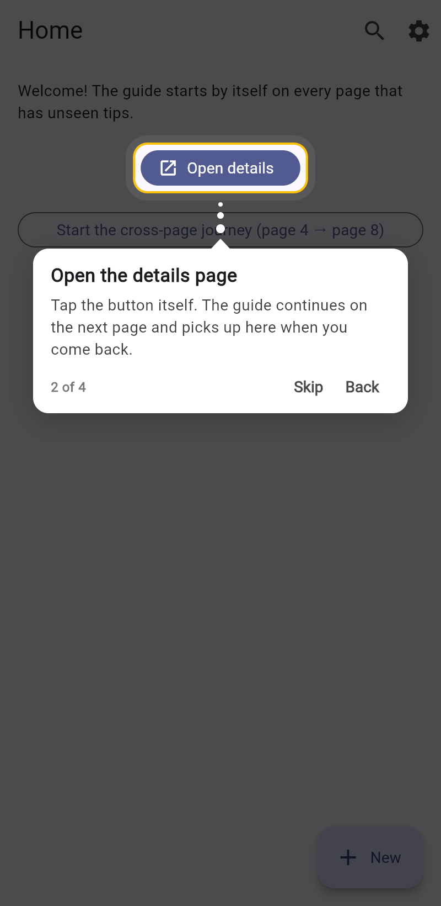
Three widgets, each with a single job.
Add a walkthrough to an existing app without restructuring it.
DolphinOnce, for the app
Wraps your app above MaterialApp. Stores progress and draws the overlay on every page.
DolphinScopeOne per page
The unit of progress. Starts by itself, pauses when covered and resumes at the same step.
DolphinTargetOne per widget
Wraps what you want to explain. Only needs an id; the text can live in one central JSON.
Dolphin(controller) once, above MaterialApp
└─ MaterialApp
└─ DolphinScope(id: 'home') one per page or section
└─ Scaffold
├─ DolphinTarget(id: 'search') one per widget to highlight
└─ DolphinTarget(id: 'profile')
Everything an onboarding flow needs, built in.
Production features from the first release, with nothing to wire up by hand.
Starts on its own
Each page with unseen tips begins its walkthrough automatically.
Remembers progress
Seen and skipped steps are saved on the device, per page.
Journeys across pages
Guide users through several pages in a fixed order, and resume later.
Central JSON
Change tip text and styling from your server without an app update.
Sync with your backend
Export and import progress as plain JSON, so new devices skip what users have seen.
Looks right everywhere
Six tooltip styles, many highlight shapes, light and dark mode.
Screens from the example app.
The example app included with the package, in light and dark.


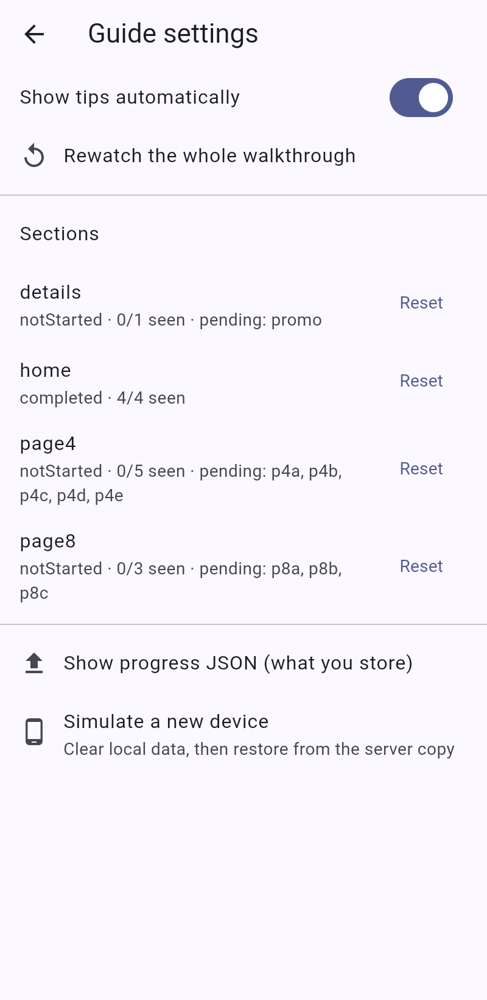
Wrap your app once, then mark what to explain.
Add the package, put one Dolphin above your app, then mark a page and the widgets on it.
import 'package:dolphin/dolphin.dart';
final guide = DolphinController();
void main() => runApp(
Dolphin(controller: guide, child: const MaterialApp(home: HomePage())),
);
// On any page:
DolphinScope(
id: 'home',
child: Scaffold(
appBar: AppBar(actions: [
DolphinTarget(
id: 'search',
title: 'Search',
description: 'Find anything from here.',
child: IconButton(icon: const Icon(Icons.search), onPressed: () {}),
),
]),
),
);The developer guide, and a new companion.
Setup and Developer Guide
Installation, quick start, customising, journeys, sync and troubleshooting, in 11 pages.
Build walkthroughs without writing them.
See the widget tree of any page, double-click a widget and fill in a form. Dolphin Walkthroughs writes the code, keeps the JSON in sync, and lets you design the whole tour in a graph before the screens exist.
Double-click a widget. It becomes a walkthrough step.
Dolphin Walkthroughs shows the widget tree of the page you are editing. Pick a widget, fill in a form with every dolphin option, watch the preview, and the extension writes the code.
ext install sanket-manohar.dolphin-walkthroughs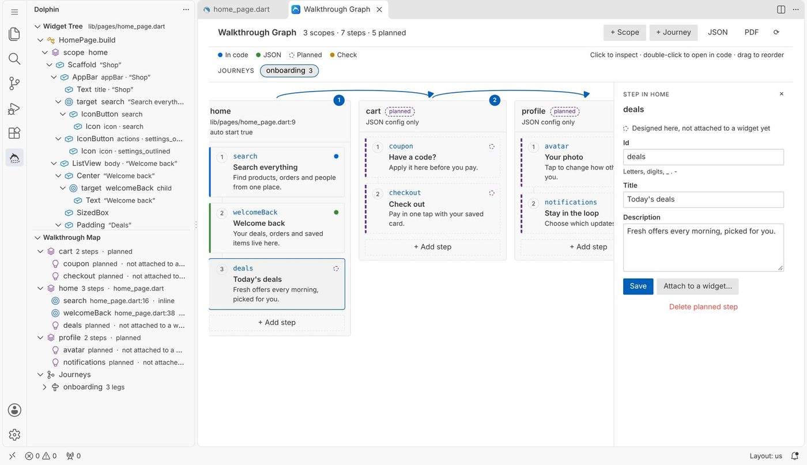
Everything dolphin can do, one double-click away.
No parameter names to look up, no JSON to keep in step by hand, and a map of every walkthrough in the project.
Widget tree
The widgets of the open file, nested as in the code, without helper objects or callbacks. It follows your cursor.
Every option in a form
Content, rules, pointer, barrier, highlight, tooltip, text, counter, buttons, animation, behaviour and dark mode.
Live preview
A sketch of the step in light and dark, and a Code tab that shows exactly what will be written.
Code or JSON
Keep content on the widget or in a JSON config the extension creates, registers and loads at startup.
Graph and design first
Plan pages, steps and journeys before the screens exist, then attach them to widgets later.
Map, PDF and checks
Every scope and step in one list, a PDF to share with your team, and problems shown while you type.
See the page as a tree.
Click the dolphin icon in the activity bar. The Widget Tree lists the widgets of the file you have open, page by page, with hints from their text, tooltip or icon.
- Click a row to jump to the code.
- Double-click to wrap it, or to configure it when it is already a dolphin widget.
- Or press Ctrl Alt T on any widget in the editor.
The screens in part two are from a small shop app with three pages: home, cart and profile.
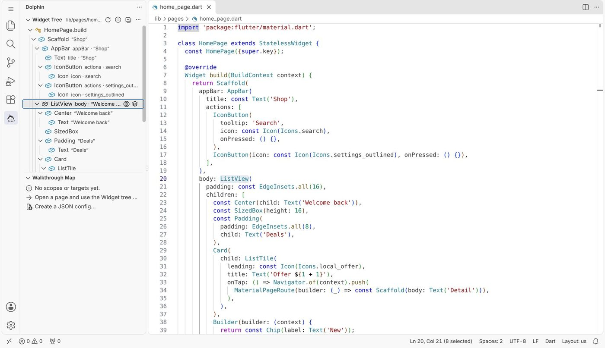
Fill in a form, not a constructor.
Choose DolphinTarget for a step, DolphinScope for a page, or Dolphin on MaterialApp for the app root. The id is suggested for you.
- Every field shows its default. Empty means “use the default”.
- The preview updates as you type, in light and dark.
- Editing an existing widget keeps anything the form does not know, exactly as you wrote it.
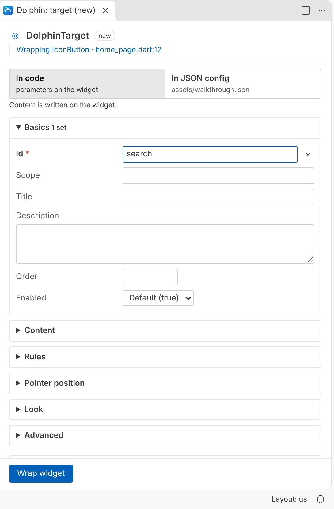
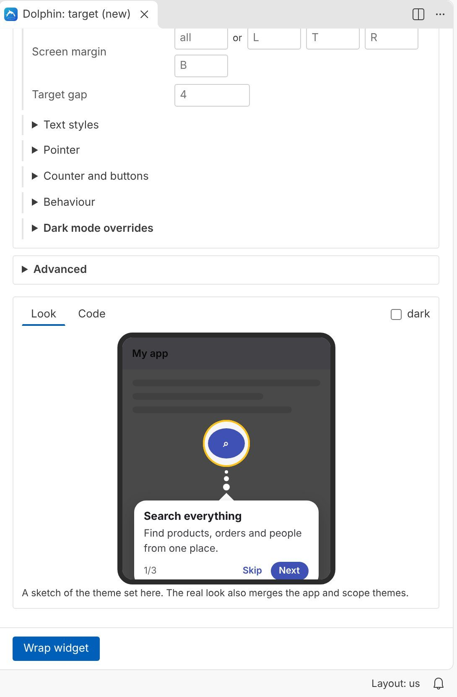
In code or in JSON.
Choose per step where its content lives. In JSON mode the widget keeps only its id, and the title, description and look go into your walkthrough config.
- The config is created at
assets/walkthrough.jsonand registered inpubspec.yaml. - One click makes
main()load it at startup. - Existing configs are read and updated in place, with your comments kept.
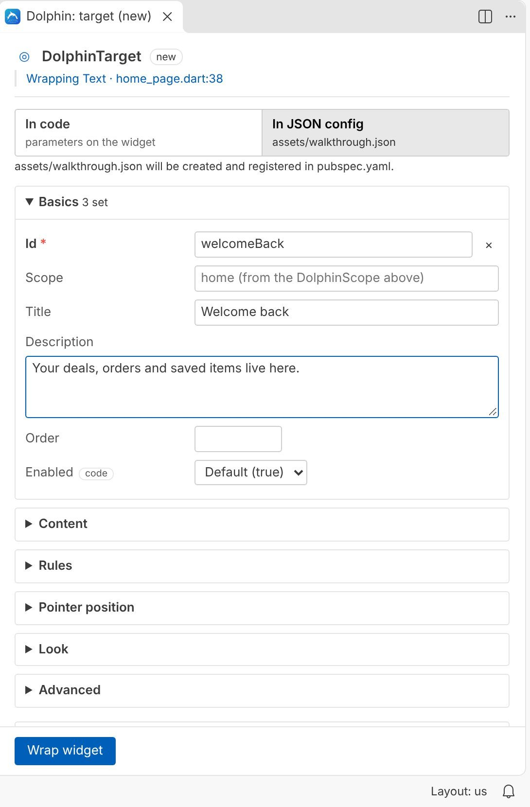
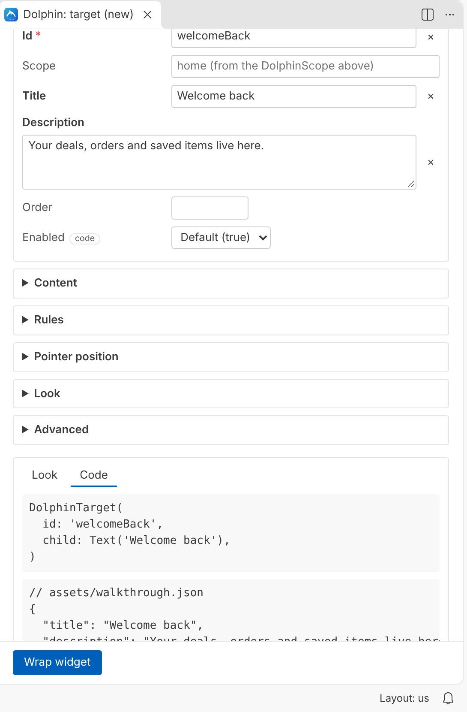
Design first, attach later.
The walkthrough graph shows each page as a lane and its steps as cards. Add pages, steps and journeys before the screens are built. They are saved to the JSON config as planned.
- Drag cards to change the order.
- Double-click a card to open its widget.
- When the page exists, double-click a widget and choose Planned step.
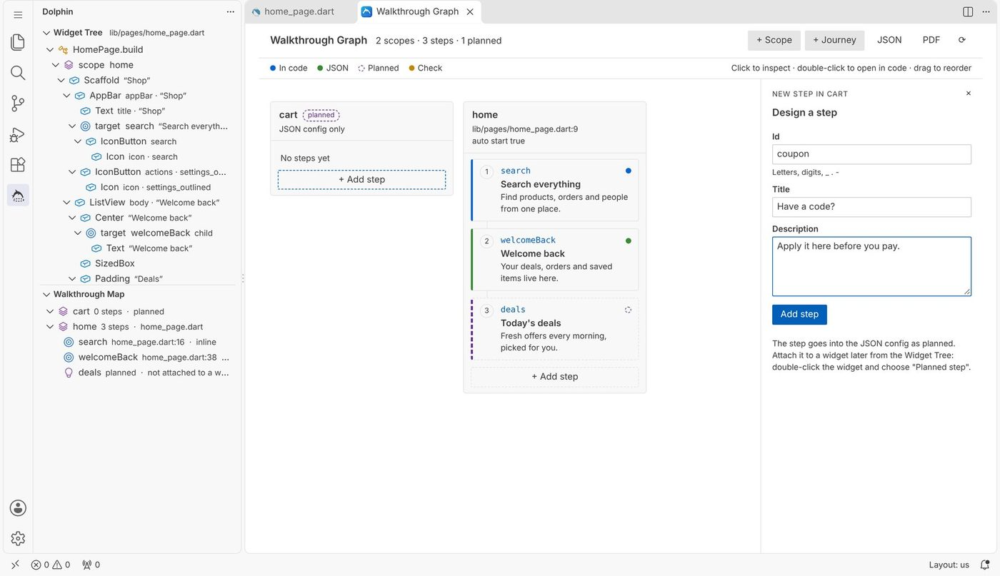
Journeys across pages.
Link pages in order, choose the steps of each page and the route that opens it. Click a journey in the graph to see its path; the steps it skips are faded.
Start it in your app with Dolphin.of(context).startJourney('onboarding').
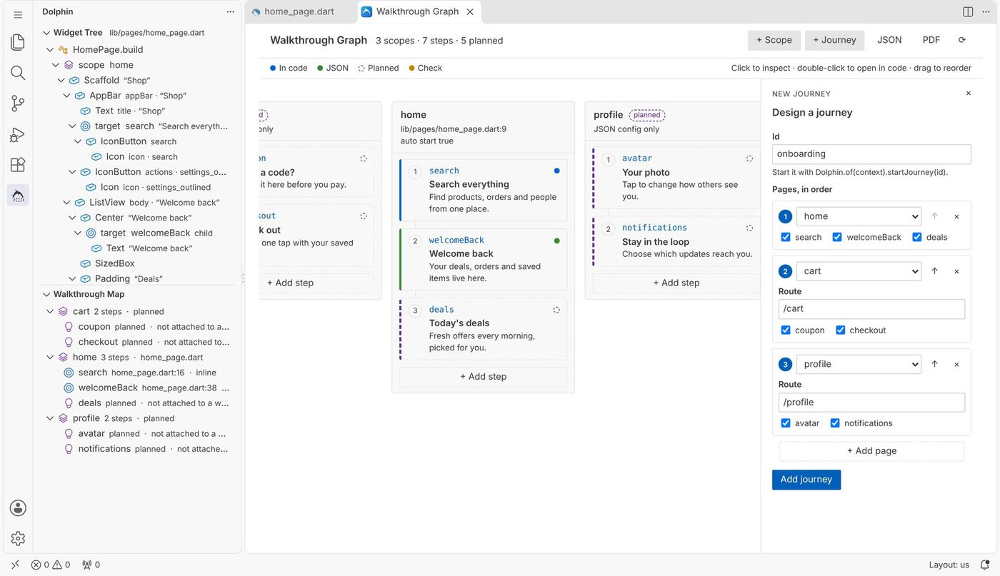
Attach planned steps to widgets.
Planned steps from every page are offered when you double-click a widget, steps of the current page first. The widget is wrapped with that id and the content stays in JSON.
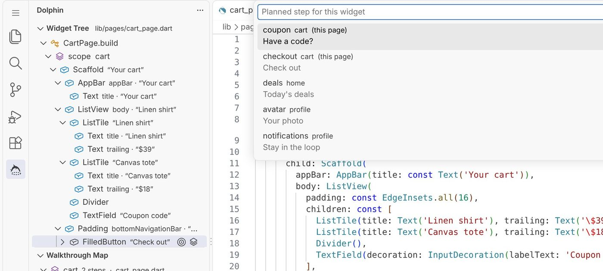
Hover, checks and a PDF for the team.
Hover a step id to see its content and position. Duplicate ids, steps with no content, unknown styles and a missing app root are marked as you type.
Export the whole map as a PDF to share with design or QA. Planned steps are listed too, so it doubles as a to-do list.
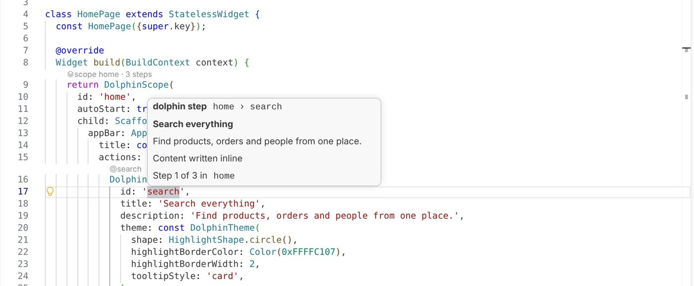
At home in any theme.
Every view and panel follows your VS Code colour theme, light, dark or high contrast, on Windows, macOS and Linux.
The configure panel beside the code, in the light theme, and the graph in a dark one.
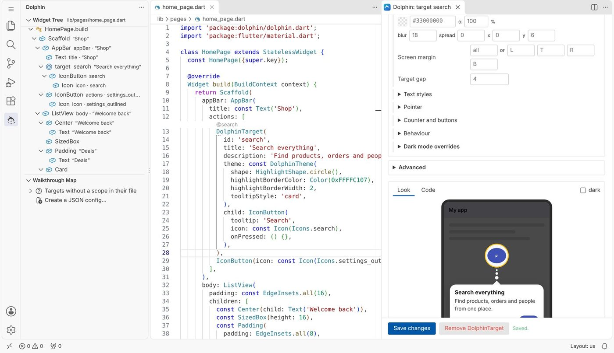
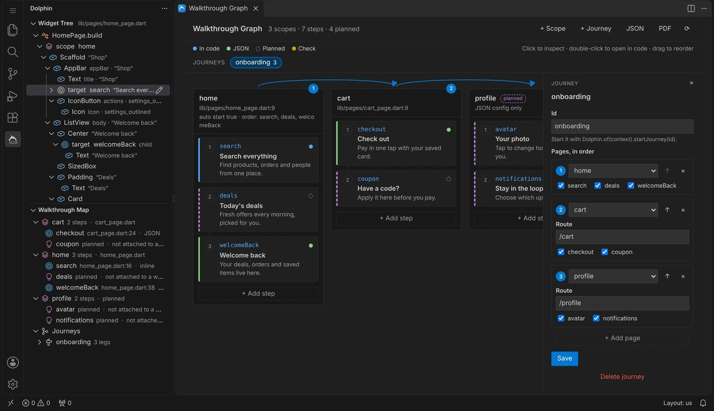
Your first walkthrough in seven steps.
Each step is described with screenshots in the user manual.
MaterialApp, choose Dolphin (app root) and click Wrap app.Scaffold and choose DolphinScope.Commands and settings.
Every command is in the Command Palette under Dolphin:, in the editor's right-click menu and in the light bulb menu on any widget.
| Command | What it does |
|---|---|
| Wrap with DolphinTarget… | Make the widget a step. Ctrl Alt T |
| Wrap with DolphinScope… | Make it a page or section. |
| Wrap with Dolphin (app root)… | Wrap the app and set up the controller. |
| Configure… | Open the form for the widget under the cursor. |
| Remove wrapper (keep child) | Take a dolphin widget away. |
| Open JSON config | Open or create the config. |
| Load JSON config at app startup | Change main() to load it. |
| Add journey… | Add a cross-page journey. |
| Open walkthrough graph | Lanes, steps, journeys and design. |
| Export walkthrough map as PDF… | Save the map as a PDF. |
| About Dolphin | Links, downloads, likes and points. |
| Setting | Default |
|---|---|
dolphin.configFile | empty: found automatically |
dolphin.defaultStorage | inline or json |
dolphin.formatAfterEdit | on |
dolphin.followCursor | on |
dolphin.codeLens | on |
dolphin.diagnostics | on |
Snippets: dscope, dtarget, dtargetid, dstep, dtheme, droot, dreplay, dreset, djourney, denabled, dbuilder, dcondition.
Good to know.
Short answers. The manual has the details.
Does it work if dolphin is already in my project?
Yes. It reads your existing dolphin widgets and JSON config as they are. Steps already in the JSON open in JSON mode with their values, and edits change only their own entry.
Does it run on Windows and macOS?
Yes, and on Linux. It has no native parts, reads and writes Windows line endings correctly, and its panels re-send their data whenever they open, so they never stay blank.
Does it collect any data?
No. It works offline and changes only the files you ask it to. Only the About page reads public download and like counts from pub.dev and the Marketplace, when you open it.
Can I undo a change?
Every wrap, edit and removal is a normal editor change, so Ctrl Z takes it back, and your version control shows exactly what changed.
What do I need?
VS Code 1.85 or newer and a Flutter project using dolphin 1.0 or newer. The Dart extension is recommended for formatting after edits.
Where do I report a problem?
Open an issue on the dolphin repository, or use Report an issue on the About page.
The user manual.
Dolphin Walkthroughs · User Manual
Installation, every feature and option, the graph and design-first workflow, journeys, settings and troubleshooting, with screenshots on every page.
Designed and developed by Sanket Santosh Vidya Manohar.
Free to use under the BSD 3-Clause License. Provided as is, without warranty. Disclaimer.
The dolphin package: pub.dev · GitHub · license